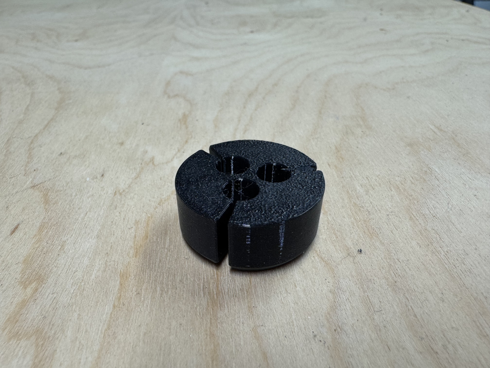
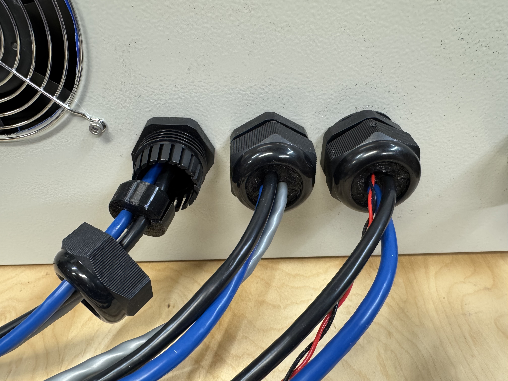

Projects
Glass Dome Polishing Machine - Summer 2025
This system was designed to automate polishing of custom fabricated glass domes for optical instruments. Residual impurities were left in the dome surface, and the shape of the dome made it difficult to use traditional grinding methods. In order to produce optical-grade glass without, I designed and built this machine.
The mechanisms and parts here were designed in Solidworks and then manufactured using a BambuLab P1S 3D printer. They interface with a deconstructed lathe toolpost, and include a spring tensioned motor "clutch" as well as a "trolley" on a custom track to achieve the desired kinematics.
Glass domes produced by this machine are used by Lumasys on commercial underwater optical systems.
Fuel Tank Payload System - Winter 2024
The system was required to hold a commercially available beverage bottle to the wing of our plane, while being removable from the pylon, while that pylon could separate from the wing.
The parts were designed using SOLIDWORKS and then manufactured using 3D printers, manual milling machines, and a Tormach 1100 CNC Milling Machine, paired with Autodesk Fusion 360 Computer Aided Manufacturing (CAM) Software to make industry-level precision parts.
This system had the fastest assembly & disassembly time at the 2025 AIAA Design Build Fly Challenge.
Aluminium Snowflake Trophies - Winter 2025
Designed and manufactured seven snowflake-shaped trophies for a local robotics competition.
Each part was designed in Solidworks CAD software, the toolpaths were generated using Autodesk Fusion 360 CAM software, and then the parts were machined on a converted CNC Precision Matthews PM-728, and stands were 3D printed. The machining required two operations per part, with the first being holes drilled for mounting to a custome fixture plate for the second operation, and the second for roughing, finishing, chamfering and engraving the trophies.
The project concluded with great success, inspiring teams at the competition to push harder to win one, and recieving recognition from competition emcees.
Custom Cable Grommet - Winter 2025
The grommets were designed to organize groups of 3 cables which power axis motors of a CNC milling machine, and route them into a controller box.
They were designed in SolidWorks and 3D printed with TPU filament, a flexible rubbery filament.
The grommets worked exceptionally well, fitting snug in the commercial housing, and closing cleanly around the cables, and providing a water-resistant barrier to keep machine coolant out of the computer box,

